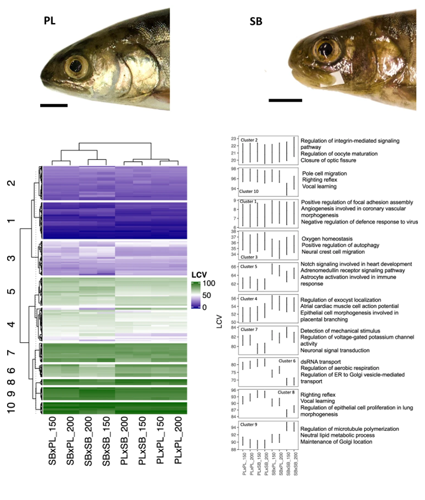

Eco-Evo-Devo & Speciation
The theory of divergence by trophic polymorphism provides powerful explanations for the diversification of vertebrates. This theory has recently been extended to capture the interactions of developmental, ecological and evolutionary processes. However, this extended framework doesn’t thoroughly account for the evolution of reproductive isolation.
My recent PhD project revolved around the Arctic charr morphs of Thingvallavatn as an ideal system to integrate reproductive isolation to the theory of divergence by resource polymorphism.
Using common-garden experiments, I studied how hybridization affects the structure of trait covariance in diverging sympatric morphs. This involved comprehensive studies on morphology, developmental timing and feeding behaviour. I also investigated how personality traits evolve during adaptive divergence and may be broken down by hybridization.
I am also much interested in the molecular processes underlying the evolution of canalization and the potential impacts on population divergence. A big part of my research aimed at understanding how gene expression variability shifts as populations evolve toward distinct fitness optima, and how this could be could be affected by gene flow.

My projects also involved field studies and mating experiments aimed at understanding the barriers to gene flow among Arctic charr morphs.
Most of this work was conducted as part of the Arctic charr research group of the University of Iceland.
Key publications:
Horta-lacueva Q.J.B., Jónsson, Z.O., Thorholludottir D.A.V., Hallgrímsson, B., Kapralova K.H. (2023). Rapid and biased evolution of canalization during adaptive divergence revealed by dominance in gene expression variability during Arctic charr early development. Communications Biology. doi.org/10.1038/s42003-023-05264-5
Horta-Lacueva Q.J.B., Snorrason S.S., Morrissey M.B., Leblanc C.A., Kapralova K.H. (2021). Multivariate analysis of morphology, behaviour, growth and developmental timing in hybrids brings new insights into the divergence of sympatric Arctic charr morphs. BMC Ecol. Evol. 21:1–15. doi.org/10.1101/2020.10.14.339911
Horta-lacueva Q.J.B., Benhaïm D., Morrissey M.B., Snorrason S.S., Kapralova K.H. (2021). Animal personality adds complexity to the processes of divergence between sympatric morphs of Arctic charr. Animal Behaviour. 175:57–73. doi.org/10.1016/j.anbehav.2021.02.022
Horta-lacueva Q.J.B. (2022) Evolution of reproductive isolation in sympatric Arctic charr morphs (Salvelinus alpinus). PhD dissertation, Faculty of Life and Environmental Sciences, University of Iceland, 187pp.
de la Cámara, M., Ponsioen L., Horta-Lacueva, Q.J.B. & Kapralova, K.H. (2023) The dynamic ontogenetic patterns of adaptive divergence and sexual dimorphism in Arctic charr. Evol. Biol. doi.org/2021.01.15.426104
Horta‐Lacueva Q.J.B. Ólafsdóttir J.H., FinnF., Fiskoviča E., Ponsioen, L., de la Cámara M., Kapralova K.H.(2022) From drones to bones: Assessing the importance of abiotic factors for salmonid spawning behaviour and embryonic development through a multidisciplinary approach. Ecol. Freshw. Fish 1–11. doi:10.1111/eff.12654